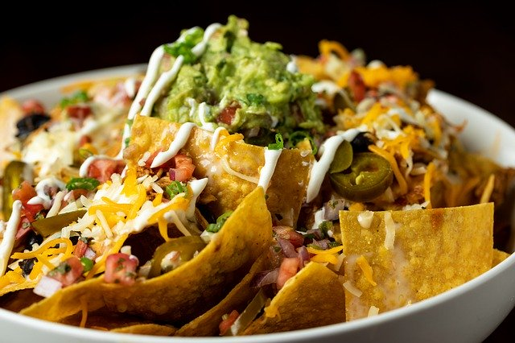
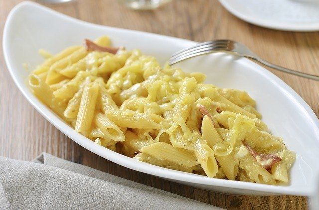
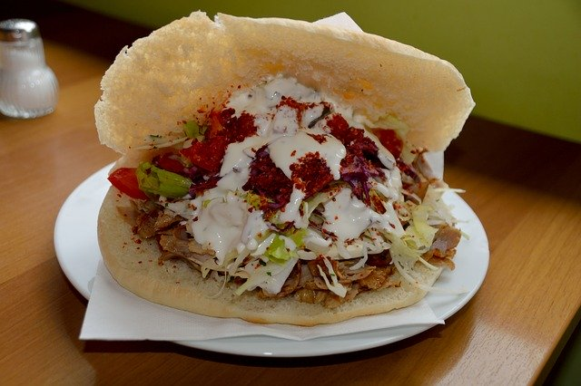
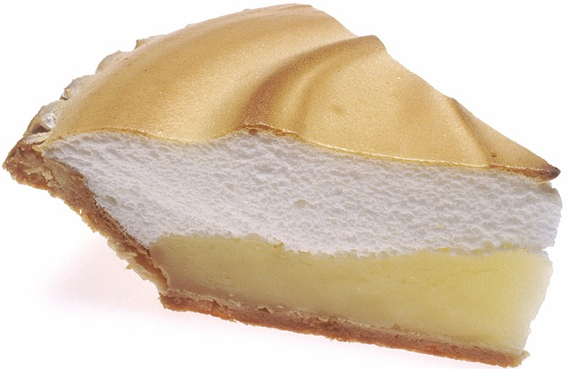
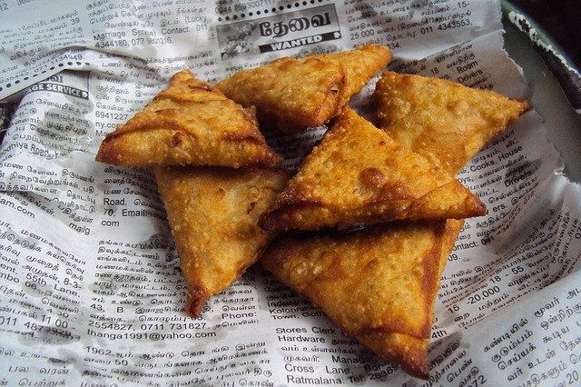
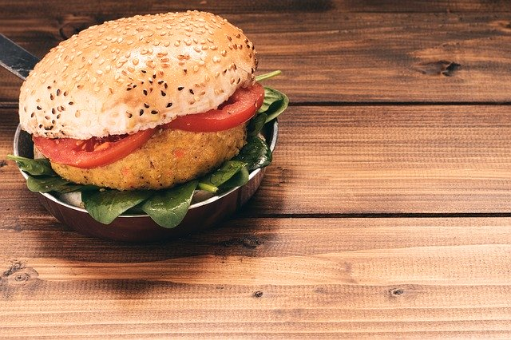
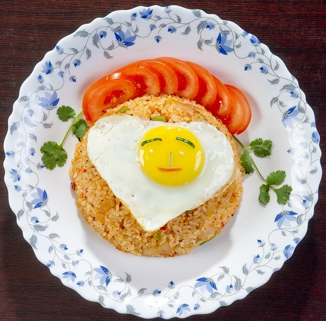
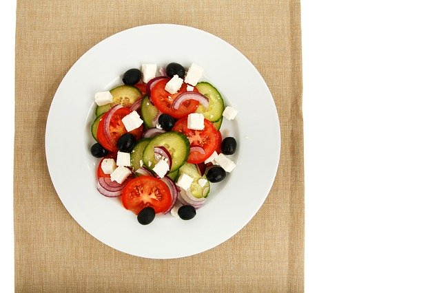

Nachos
 This image of nachos is one of my favourite comfort foods. It is made with tortilla chips covered in salsa and cheese and vegetables. Sometimes beef or another meat is added to the top. They are grilled in the oven until all the cheese melts. Don't forget to serve with gaucamole.Image by tarheelgarden from Pixabay
Macaroni and cheese
 This image of macaroni and cheese is good but ruined by ham or bacon being added. I do not know why someone would ruin delicious meals with bacon. Who are these people? lol But basically made by a bechamel white cheese sauce and cooked pasta. To make it extra yummy add bread crumbs and shredded cheddar on top then grill in the oven to melt the cheddar.Image by Tony Zhu from Pixabay
Doner kabab
 This is a great snack food or lunch. Made by grill up a pita bread lightly then add vegetables, garlic sauce or taziki sauce and meat inside with lettuce or spinach.Image by Marion Wellmann from Pixabay
Lemon pie
 This is a standard dessert in most North American diners. It contians a lemon gel like filling over a crumb base with a fluffy egg white whipped and baked on top.Image by skeeze from Pixabay
Basil Garlic pizza
 Basil garlic pizza is a delicious treat. Made with a nice crust of dough, topped with tomato sauce, roasted garlic, mozzerella and basil.
Basil garlic pizza is a delicious treat. Made with a nice crust of dough, topped with tomato sauce, roasted garlic, mozzerella and basil. Image by Free-Photos from Pixabay
Samosas
 Samosa are made from a mashed potato and vegetables mixed with spices and wrapped in a pastry dough. Then fried in oil until crispy golden brown.Image by Mohamed Nuzrath from Pixabay
Vegetarian burger
 The vegetarian burger patty is sometimes made with chickpeas ground and mixed with fried onions and other small diced vegetables and spices then shaped into a patty and baked in the oven.Image by Roberto Rizzo from Pixabay
Egg and fried rice
 Fried rice with an egg is delicous with the egg mixed up and scrambled first then added to the fried rice. Or you can do it like the photo shows and top the rice with a fried egg.Image by Анатолий Стафичук from Pixabay
Greek salad
 Greek salad like this photo shows that you can make it with cucumber, tomoto, onion, olives and feta. It is tasty and healthy.Image by PublicDomainPictures from Pixabay